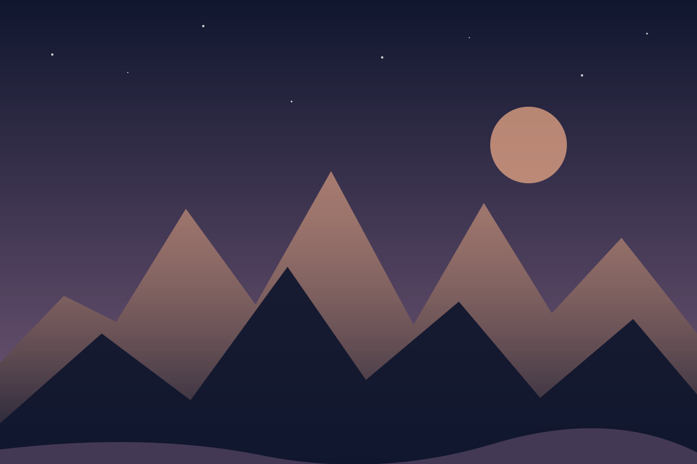

High places
The Pakistani mountain ranges have a scale that changes how a scene feels.

Mountains, quiet skies and the small details that stay with me outside the terminal.
See the gallery ↓I am drawn to the light on a ridgeline, a city after dark and the scale of the night sky. Photography gives me a reason to pause and look twice.

These are visual placeholders while I choose which personal photographs to share.
The Pakistani mountain ranges have a scale that changes how a scene feels.
Astronomy keeps me aware of how much there is beyond the frame.
The blue hour turns familiar shapes into something quieter.
Three threads I return to when making pictures: landscape, light and the space between.
How a place holds distance and memory.
The brief changes that reveal a scene.
A different sense of scale after sunset.
Compare the gallery with and without captions.